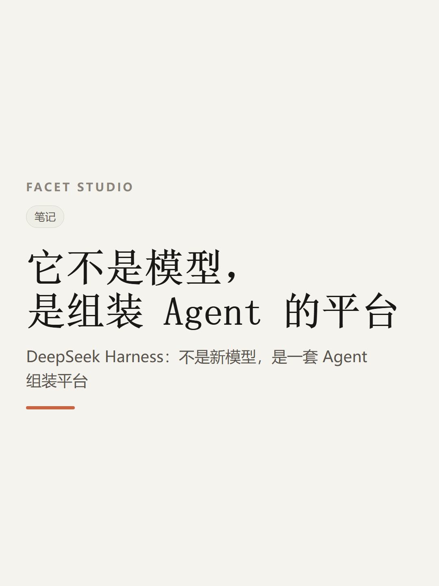

配图 · 1 张（按顺序保存或上传）


DeepSeek Harness：不是新模型，是一套 Agent 组装平台
先说结论：DeepSeek Harness 不是新模型。
也不是 DeepSeek 版的 Codex。
它是一套用来构建、运行、扩展 Agent 的开源平台。模型是大脑，负责理解、推理、做决策；它负责把大脑接到文件、终端、网页上，管住任务怎么跑、上下文留多少、权限开到哪。
一句话，它不生产智能，它组装智能。
实测是这么玩的：让接入 DeepSeek V4 Flash 的 Harness 从零做一个射击游戏，全程不插手。
30 多分钟后，一个简单能玩的游戏出来了。
顺手让它把“华强买瓜”做成 3D 动画，剧情和人物关系基本都还原了。同样的提示词，效果比 GPT-5.6 SOUL 驱动的 Codex 好。
但边界得说清楚：距离完美还很远，不是能直接上线的成品。
它凭什么做到？两件事。
一是一切皆插件。模型、文件系统、终端、网页、子 Agent、工作流、安全策略，连 Agent 循环本身，都能插上去、拔下来。
二是日志可复盘。模型看见的每一条内容、每次工具调用的结果，理论上都能从日志里重建。任务跑歪了，能回头查到是哪一步出的问题，而不是只拿到一个失败结果。
想试的话：去官方开源仓库按说明配置部署，普通用户推荐用 Web UI。它给了四种模式——标准、PTC、极简、创造，各自加载不同的插件和运行能力。
你会先让它做什么？